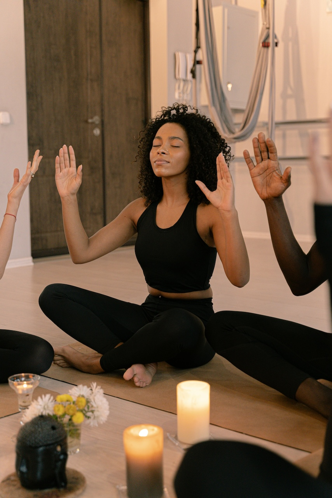

Helping you bloom, one month at a time.
The more comprehensive routines will be found on the monthly page for the interested self improver. Monthly self-care can take various forms, a few being participating in a fitness challenge, reducing processed foods, developing sleeping routine, or just trying out another movement form like yoga or dance. These are what lead to building resilience and discipline, all the while being in connection with self-love. The mental aspect of Monthly self-care routines may include everything from setting personal intentions to spending some time reflecting upon patterns in their own lives for that month to interacting with any piece of literature that has meaning for them and forgiving themselves and others. They might also spend time writing long letters to their future selves and taking full weekends to rest without feeling guilty over it. People can also indulge in an environmental aspect of self-care; this will be a task like decluttering a closet and donating what will not be used, putting together a compost bin, or volunteering for a care around their community. These are bigger decisions and require a bit of more thinking and time but give feelings of real impact and contribution, even at the Monthly level. Self-care at the Monthly level would be taking a step back and viewing the larger scope and, by thoughtful and intentional direction, to choose who that person will be in the world.
Self Care: Mind
🕯️ Reflect on the month that just passed.
🕯️ Meeet with a therapist, counselor, or mentor.
🕯️ Social media detox.
🕯️ Evaulate your schedule and habits and cut out anything not working for you, or add what will.
🕯️ Read a book for pleasure or personal growth
🕯️ Create a vision/mood board for the month to come.
🕯️ Attend a workshop, seminar, or event that inspires you mentally/emotionally
Self Care: Body
🌸 Get a hair cut.
🌸 Treat yourself to a massage.
🌸 Try a 30 day fitness challenge.
🌸 Take a relaxing bath with benefitial herbs and oils.
🌸Sun gazing.
🌸Do a body detox from toxic beauty standards.
🌿Deep clean your space.
🌿Declutter and donate to your local homeless shelter.
🌿Leave food outside your home for stray animals.
🌿Reorganize your furniture around your house or in your room.
🌿Create a study corner in your room.
🌿Repot your plants.
🌿Invite friends and family to your space for a get together.
🌿Go for a walk and take in the site of nature.